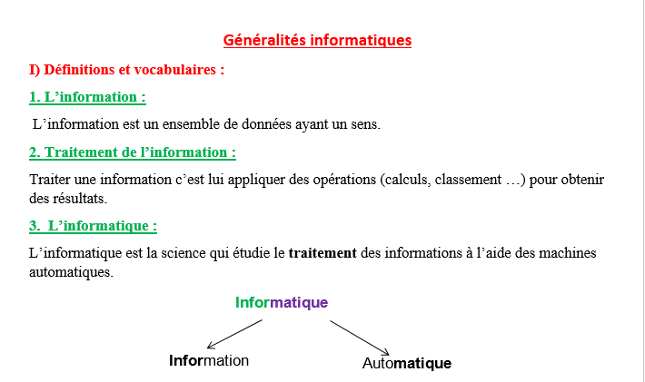
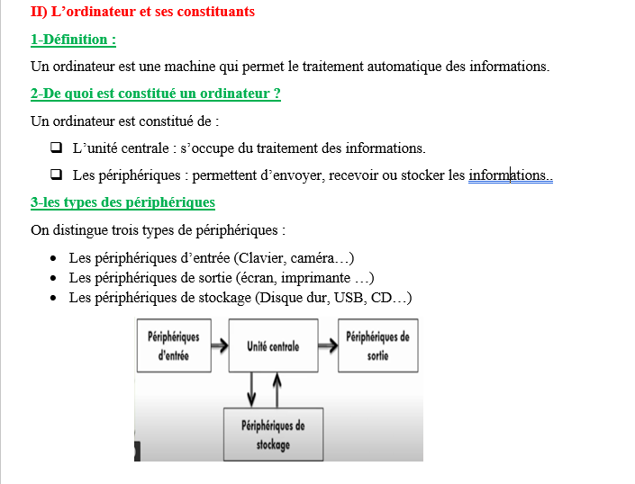
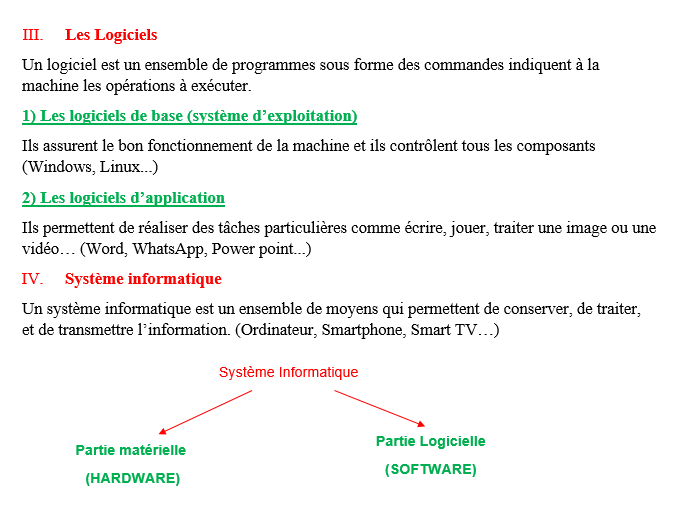

I) Définitions et vocabulaires
1. L'information
L'information est un ensemble de données ayant un sens.
2. Traitement de l'information
Traiter une information, c'est lui appliquer des opérations (calculs, classement…) pour obtenir des résultats.
3. L'informatique
L'informatique est la science qui étudie le traitement des informations à l'aide des machines automatiques.
II) L'ordinateur et ses constituants
1. Définition
Un ordinateur est une machine qui permet le traitement automatique des informations.
2. De quoi est constitué un ordinateur ?
Un ordinateur est constitué de :
- L'unité centrale : elle s'occupe du traitement des informations.
- Les périphériques : ils permettent d'envoyer, recevoir ou stocker les informations.
3. Les types de périphériques
On distingue trois types de périphériques :
d'entrée
centrale
de sortie
III) Les logiciels
Un logiciel est un ensemble de programmes sous forme de commandes indiquant à la machine les opérations à exécuter.
1. Les logiciels de base (système d'exploitation)
Ils assurent le bon fonctionnement de la machine et contrôlent tous les composants.
Windows · Linux…2. Les logiciels d'application
Ils permettent de réaliser des tâches particulières comme écrire, jouer, traiter une image ou une vidéo.
Word · WhatsApp · PowerPoint…IV) Système informatique
Un système informatique est un ensemble de moyens qui permettent de conserver, de traiter et de transmettre l'information.
📷 Documents du cours
Les documents originaux du premier cours sont conservés ici comme support visuel.


